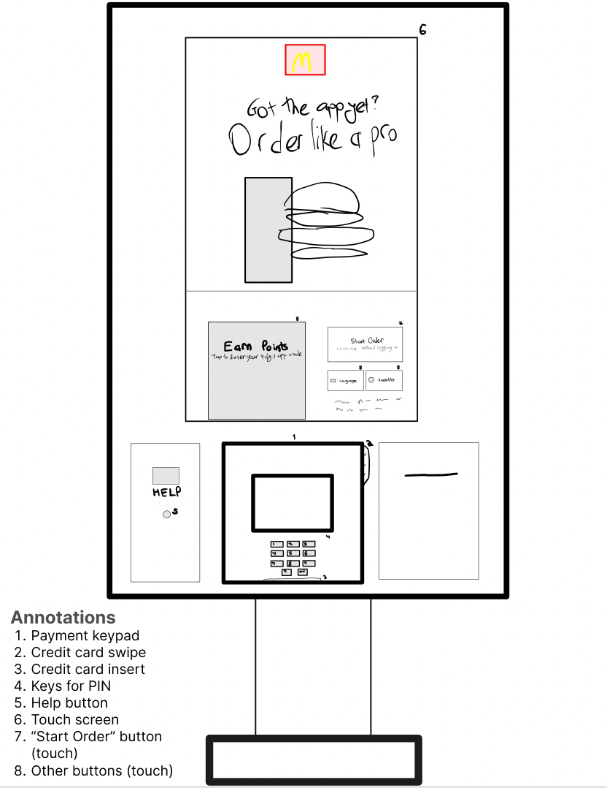

McDonald's Kiosk
Helps fast food become faster by alleviating the problem of long queues for customer orders. With a touch screen interface, its key components are order selection and payment checkout.

How do users engage with the kiosk and what do they say?
Observations of user behavior
- Users generally coped well with the interface; on some screens, users were able to make quick decisions (< 5 seconds), while on others they would take longer (~30 seconds).
- Particularly, when choosing a language and food category (e.g. 'desserts'), users navigated rapidly, but in choosing between an entree and a meal, or when selecting a drink, selections took longer.
- Total time from start to checkout differed between individuals ordering alone versus in pairs, taking ~1:45 minutes for individuals and ~3:30 minutes for couples.
Interview questions
- Was this your first time using the kiosk?
- Describe your experience using the kiosk today.
- Did you find anything frustrating? Was there anything you liked? What would you improve?
- Do you feel like the kiosk made your order process faster?
- Which do you like more, ordering with a kiosk or with a person?
- How do you feel about the payment process?
- What did you plan on ordering? What did you actually order?
Takeaways from interviewing users
- Among three interviewees, one was a first-time user and the others had used the McDonalds kiosk multiple times.
- Two interviewees listed the kiosk as their preferred order method due to intuitiveness and speed of use, while the third interviewee prefers using his phone for hygienic reasons.
- Two dissatisfactions voiced by users were poor responsiveness to usage of the ‘Help’ button, and buggy behavior from the touchpad (e.g. buttons shift when trying to add pickles to a meal).
- All interviewees ordered items identical to what they had planned on ordering coming into McDonalds.
Personas - Anxious Anne and Grossed out Gary
Storyboard - Anxious Anne